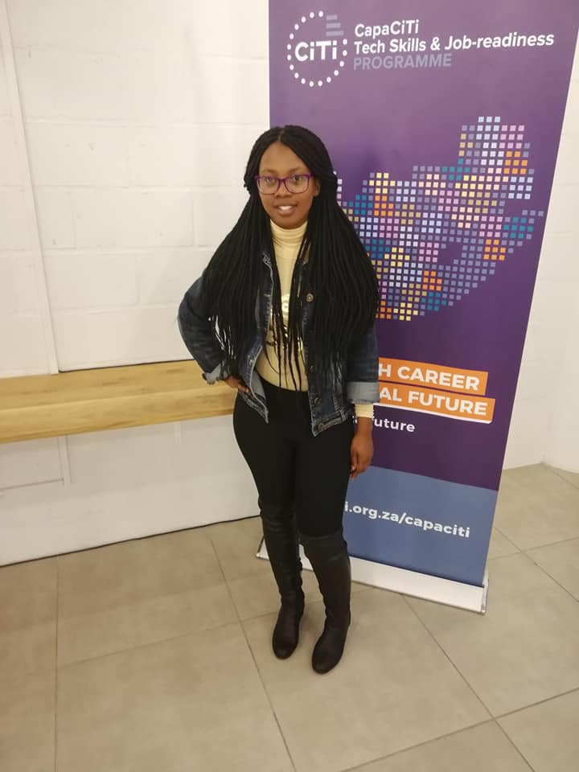

<!DOCTYPE html>
<html> 
    <head></head>
    <title>About my self</title>
    <link rel="stylesheet" href="style.2.css"/>
    </html>
<body>
    
        <div class="topnav">
        <ul>
        <a href="index.html">Home </a>
        <a href="about.html"> About</a>
        <a href="contact.html">Contact Me</a>
        
            </ul>
            </div> 

  
          </body>
          </html><meta charset="UTF-8">
          <meta name="viewport" content="width=device-width, initial-scale=1">
          <link rel="stylesheet" href="https://www.w3schools.com/w3css/4/w3.css">
          <body class="w3-content" style="max-width:1700px">
          
          <!-- First Grid: picture& About -->
           <h1><left>About my self</left> </h1>
                
              </div>
            </div>
            <div class="w3-half w3-blue-grey w3-container" style="height:900px">
              <div class="w3-padding-64 w3-center">
                
               
                <div class="w3-left-align w3-padding-small">
                  <p>I am a Web site developer and i'm based in Cape town.                                       
                  I am obsessed about developing and coding and designing.</p>
                  <p>I fell in love with coding when i was still in high school.
                      i decided to pursue my career in IT and i did ICT Infrastructure at College of Cape town under CapaCiti.</p>
                      <p> I was lucky enough i got an opportunity to be part of the Younglings Programme.
                          I am now advancing my career as a Web developer and  i must say i'm really enjoying it.</p>
                          <br>
                      <p>  Below is the skills that i have acquired through capaciti program and some i got them on my own. </p>
                          <p>    CCNA-Routing and Switching</p>
                            <p>  IT Essentials</p>
                             <p> Cyber Security</p>
                             <p> Linux Fundamentals</p>
                             <p> HTML AND CSS</p>

                </div>
              </div>
</div>
</body>
</html>